근거 · model/README.md 상태 · plate 보호 절
요약
75.6 cm³, 스위치 홀 46개, 3층 구조라 가장 비싼 출력물이다. 맞지 않는 곳은 프레임·커버·조립 단계에서 흡수하고 plate는 다시 출력하지 않는다.
JLC3DP FDM 치수 공차. 100 mm 이하 ±0.3, 그 이상 ±0.4%. 따로 출력한 두 부품 사이 간격 차는 두 공차를 더한 만큼 벌어질 수 있다.
- B 시험 쿠폰과 보스 탭 STL/STEP 재내보내기 확인, 주문
- PSD60 재실측. 11-04 1차 기록은 대략값이라 배선 높이(M14), 테두리 높이(M05), 코너 R(M03)부터 다시 잰다(
measure_psd60.html) - USB 연장 케이블 커넥터 규격 확인
근거 · model/README.md 부품 바디 표 · parameters.csv
적층 구조
- Z 11.5–15커버 3조각(L·T·R). 베젤 2T에 테두리 립 1이 plate 단차에 앉는다. 밑면 보스 6개가 plate 카운터보어에 꽂히고, 보스 끝 자석이 스탠드오프 나사머리를 끌어당긴다.
- Z 8–13plate 5T, 3층. 위 2는 16.5 개구(스위치 상부 하우징 자리), 가운데 1.5는 14.0 홀(걸쇠가 걸리는 층), 아래 1.5는 16.5 릴리프. 아랫면에 Pro Micro 브래킷(Z 1–8)이 붙어 있다.
- Z 1.5–8육각 스탠드오프 6개(M3). 프레임 육각 포켓(깊이 1.5)에서 plate 밑면까지. 노출 높이 5는 가정값이다.
- Z 0–3프레임 3T. 중앙이 열린 테두리형. 케이스 나사 6곳으로 하우징 지지대에 고정한다. SO1·SO2·SO4·SO5 자리는 X 방향 장공이다.
- Z 0 기준PSD60 하우징 지지대 상면. 좌표 원점은 GH60 PCB 기준점(앞·왼쪽)이고 타이핑 경사는 뺀 값이다.
SO1 단면, 축척 30 px = 1 mm
SO1 중심(X 6.49)을 지나는 YZ 단면이다. 왼쪽이 하우징 앞벽, 오른쪽이 키보드 안쪽이다. 모델 치수로 그렸고, 나사 길이와 머리 모양은 형식이 정해지지 않아 모양만 나타냈다. 하우징 벽 높이와 바닥 깊이는 Wilmore 대용값(테두리 12.2, 바닥 6.2)이다. 11-04 1차 실측은 테두리 14, 지지대 높이 5.5였다.
틈
- 0.3하우징 벽 ↔ 커버 외곽
TBD_cover_gap. 위에서 보면 커버가 plate 둘레 틈을 덮는다. - 0.3커버 립 ↔ plate 단차 안쪽 벽
TBD_cover_lip_clr. 단차 벽은 커버 기준이라 plate 틈을 바꿔도 그대로다. - 1.5립이 단차 바닥에 걸치는 폭. 나머지 0.5는 plate 밖에 뜬다.
- 0.8하우징 벽 ↔ plate 외곽
TBD_plate_gap. plate는 벽에 닿지 않고 스탠드오프로만 위치가 정해진다. 상한 약 1.1. - 0.3하우징 벽 ↔ 프레임 외곽.
부품
- 1커버 베젤 2T(Z 13–15). 립 폭 2 × 높이 1.
- 2네오디뮴 자석 Ø4 × 2. 보스 끝 포켓 Ø4.2 × 2.1에 접착, 위 베젤 살 1.4.
- 3커버 보스 Ø5.6 ↔ 카운터보어 Ø6.0, 반경 여유 0.2. 조각당 보스 2개가 위치와 회전을 잡는다.
- 4보스 끝 ↔ 나사머리 0.35. 자석이 강철 나사머리를 끌어당긴다. plate 쪽에는 자석이 없어 극성을 따지지 않는다.
- 5위 나사 M3 버튼헤드(탄소강, 머리 Ø5.7 × 1.65). 카운터보어 깊이 3.5, 머리 아래 plate 살 1.5.
- 6plate 5T. 위 2 = 16.5 개구, 가운데 1.5 = 14.0 홀 층, 아래 1.5 = 릴리프.
- 7육각 스탠드오프 M3, 맞변 4.7(r2 도면 참고값).
- 8프레임 3T. 육각 포켓 맞변 5.0 × 깊이 1.5. SO1·SO2·SO4·SO5는 X 방향 ±1 장공.
- 9아래 나사 M3 버튼헤드. 머리가 장공 폭 3.3 위에 편측 1.2씩 걸친다.

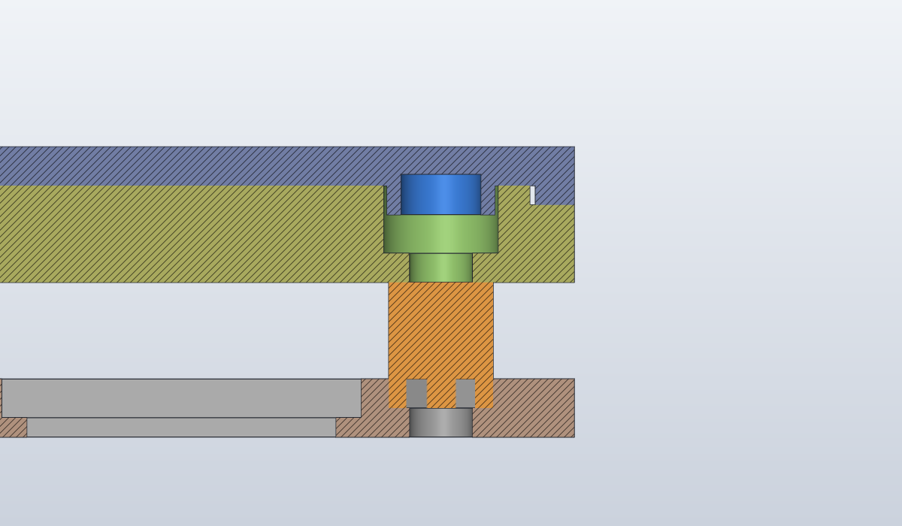

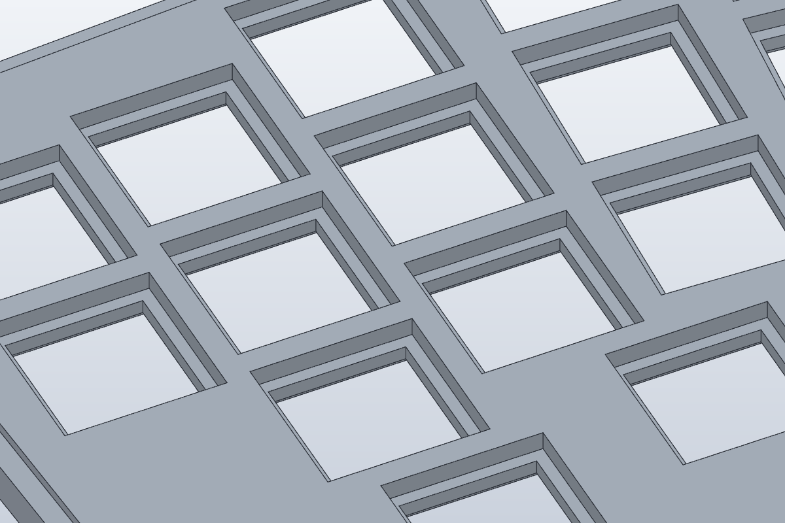

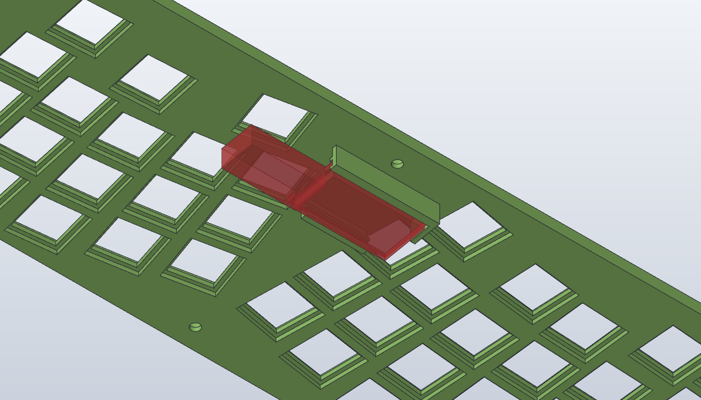

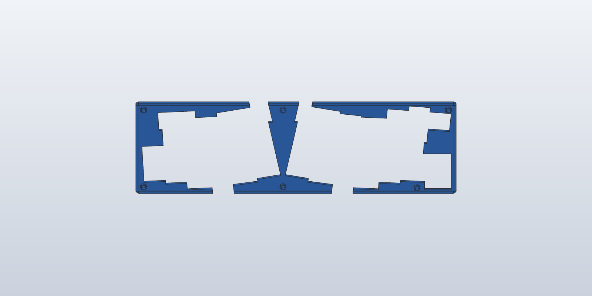
근거 · model/README.md「plate 보호」 · samples/README.md 9번
맞춤 검토
plate 치수를 기준으로 두고, 어긋남은 상대 부품이나 조립 단계에서 흡수한다. 볼트 구멍 주변만 따로 출력하는 교환식 블럭도 검토했지만 버렸다. 커버 보스 둘레 살이 1.0–1.4밖에 없어 자리가 없고, 블럭과 포켓 사이에 끼움이 하나 더 생기며, JLC 재주문은 크기와 상관없이 배송과 대기가 같다.
판정은 JLC 규격 최악값 기준이다. 실제 출력 오차는 B 쿠폰 외곽 실측(시험 9번)으로 확인한다. 커버 보스와 프레임↔케이스 두 행의 최악값·흡수량 비교는 이 페이지에서 계산했고 README에는 아직 없다.
| 맞닿는 곳 | 최악 어긋남 | 설계가 흡수하는 양 | 판정 | 안 맞으면 (plate는 그대로) |
|---|---|---|---|---|
| 프레임 ↔ plate X 스탠드오프 간격 | ±1.18SO6 ↔ SO5 147.6 (SO1 ↔ SO6 124.4는 ±1.0) | 1.45SO1·SO2·SO4·SO5 X 장공 ±1 + 구멍 여유 0.15 × 3 | 여유 0.27 | 장공 끝에 닿으면 프레임 장공을 줄로 늘리거나 프레임만 재출력 |
| 프레임 ↔ plate Y 스탠드오프 간격 | 0.6Y 간격 81 | 0.6구멍 여유 0.15 × 4 | 여유 0 | 위와 같음 |
| 하우징 벽 ↔ plate 외곽 | 1.07외곽 편측 0.57(286 × 0.4% ÷ 2) + 조립 위치 0.5 | 0.8외곽 틈, 상한 약 1.1 | 쿠폰으로 확정 | plate 가장자리를 사포로 다듬는다. 편측 0.5까지 깎아도 커버 립이 단차 바닥에 1.0 이상 걸친다 |
| 프레임 컨트롤러 개구부 ↔ 브래킷 | 작음원형 기준점 SO6 바로 옆 | 편측 0.3 | 여유 있음 | 프레임 개구부를 줄로 넓힌다 |
| 커버 보스 ↔ plate 카운터보어 | 0.6보스 간격 81.4 / 81.4 / 87.1, 두 부품 ±0.3씩 | 0.4반경 여유 0.2 × 2 | 부족할 수 있음 | 보스를 줄로 깎거나 그 조각만 재출력(조각 5.2–6.2 cm³) |
| 스위치 46개 ↔ 14.0 홀 | 홀 공차 ±0.4, 홀 층 처짐홀 층은 16.5 개구 위로 1.25 돌출 출력 | B 쿠폰 행 C13.7–14.3, plate와 같은 출력 방향 | 시험 전 | 빡빡하면 16.5 개구로 바늘줄을 넣어 14.0 홀을 다듬는다. 헐겁거나 걸쇠가 안 걸리면 아래 릴리프 쪽에서 접착 |
| Pro Micro ↔ 브래킷 홈 | PCB 두께 1.6 | 홈 1.91.6 + 0.3 | 현물 전 | 빡빡하면 턱을 줄로, 헐거우면 테이프로 심 |
| 스택 높이 ↔ 하우징 테두리 | 미실측(M05) | 기성 스탠드오프 | 실측 전 | 스탠드오프 길이를 바꾸거나 포켓 바닥에 M3 와셔 |
| 프레임 ↔ 케이스 plate와 무관 | ±1.1H05 ↔ H06 277.6 | 0.4원형 구멍 2곳, Ø2.4에 M2 | 프레임 재출력 위험 | M08 실측 때 H06(또는 H05)을 X 장공으로 바꿀지 정한다 |

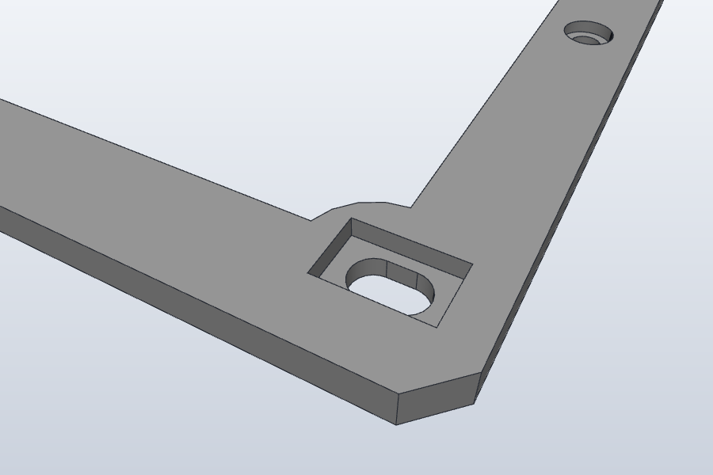

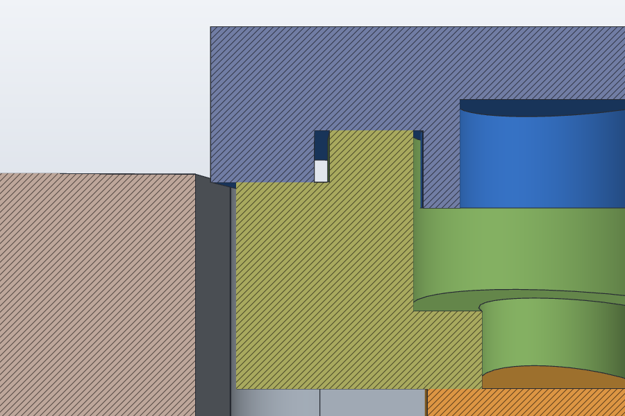
근거 · model/README.md · 이 페이지의 맞춤 검토
열린 항목
- 위험
프레임 ↔ 케이스 원형 구멍 H05·H06
277.6 떨어진 두 구멍이 모두 원형이라 프레임 외곽 오차가 최악이면 케이스 나사가 들어가지 않는다. plate와는 무관하다. 사용자 요구(11-04)는 케이스 체결을 위치마다 오차 방향에 맞춘 장공(±1 안팎)으로 하고, 기준 구멍 1개와 방향 기준 장공 1개로 위치를 재현하는 것이다. 1차 실측의 H 지지대 위치(M08 6개 성분)는 장공 방향을 정하는 근거로 쓰고, 구멍 중심은 GH60 후보 좌표를 유지한다. 원본 계열의 조립 여유 수정 판(split 계열의 바탕)에는 방향별 장공 6개가 들어 있고, 이 페이지의 plate 보호 변형에는 아직 없다.
- 확인
커버 보스 흡수량 0.4 < 규격 최악 0.6
커버는 조각 단위로 싸게 다시 뽑을 수 있어 plate 보호 원칙에는 맞는다. 보스 여유는 B 쿠폰 카운터보어 Ø6.0 / 6.2 / 6.4와 보스 탭(Ø5.8)으로 정한다.
- 확인
plate 외곽 틈 0.8은 임시값
쿠폰 외곽 145.35 × 74.15를 재서 축척 오차율을 구하고, 틈 ≥ 오차율 × 143 + 0.5로 정한다. 예를 들어 +0.2%면 0.79다. 1.1을 넘기면 plate 섬 모서리 모따기가 실패한다. 사용자 확인(11-04)으로 r2 외곽은 코너 R 외에는 잘 맞으므로, 쿠폰 오차가 작으면 0.8보다 줄인다.
- 위험
배선이 plate 밑 8까지 내려온다 (스탠드오프 노출 5)
1차 실측(M14)에서 plate 밑면부터 배선 최하단까지가 8이었다. 지금 모델은 스탠드오프 노출이 5라서 배선이 프레임 상면보다 3 아래까지 내려온다. 프레임은 가운데가 열려 있으니 배선이 테두리, 바, 컨트롤러 링과 겹치는 곳만 문제다. 겹치면 스탠드오프를 8 이상으로 키우거나 배선을 프레임 창 안쪽으로 돌린다. 스탠드오프를 키우면 plate와 커버도 같은 만큼 올라간다.
- 확인
USB 플러그 높이 7 vs 하우징 바닥까지 6.2
Pro Micro 부품면 아래로 나오는 연장 케이블 플러그(자리표시 25 × 12 × 7)가 Wilmore 기준 바닥 깊이 6.2에 못 들어갈 수 있다. M05·M15·M16에서 확인한다.
- 구매 주의
스탠드오프 나사는 탄소강
커버 자석이 나사머리에 붙어야 하므로 흑색이나 아연도금 탄소강 M3 버튼헤드를 쓴다. 스테인리스 A2는 자석이 붙지 않아 쓸 수 없다. 1차 실측(M13)에서 지금 가진 나사는 스테인리스로 기록됐다.
- 확인
커버를 들어 올릴 손톱 여유
Wilmore 수치로는 베젤 밑면이 하우징 테두리보다 0.8–1.1 높다. 1차 실측은 테두리 14라서, 지금 높이(베젤 밑면 Z 13)에서는 베젤이 테두리보다 1 낮고 커버 윗면만 1 솟는다. 손톱이 들어가기 어렵다. 한 곳만 잰 대략값이라 M05 재실측 뒤 정한다. 배선 때문에 스탠드오프를 3 키우면 베젤 밑면이 테두리보다 2 높아진다. 그대로 가면 자석 없는 끝의 립을 10 정도 끊고 밑면을 모따기하거나 들어 올릴 홈을 낸다.
- 모델 유지
실측 반영 때 손으로 다시 잡을 곳
plate 외곽이 바뀌면
PLATE_ISLAND_CHAMFER의 모서리 선택점 4개를 다시 찍는다.TBD_pcb0_dx/dy가 바뀌면 키 위치 DXF 4종을 다시 만들어 스케치를 바꾼다. - 결정 대기
B 쿠폰 STL/STEP 재내보내기
2026-11-05 개정 형상(행 C plate 3층, 행 D M2·M3·카운터보어·육각 포켓, 별도 보스 탭)을 쿠폰과 보스 탭 두 파일로 내보내는 확인을 기다린다. 폴더의 STL은 이전 판이다.
근거 · model/README.md · parameters.csv · samples/README.md 출력 방향
부품과 구매품
| 출력 부품 | 수량 | 부피 | 출력 방향 | 내용 |
|---|---|---|---|---|
| 프레임 | 1 | 20.7 cm³ | 밑면을 베드에(육각 포켓이 위로) | 3T, 중앙 개방, 스탠드오프 장공 4 + 원형 2, 케이스 장공 3 + 원형 3, USB 노치, 컨트롤러 개구부 |
| plate | 1 | 75.6 cm³ | 윗면을 베드에(브래킷이 위로) | 5T 3층, 스위치 홀 46, 카운터보어 6, 가장자리 단차, Pro Micro 브래킷 |
| 커버 L · T · R | 3 | 5.77 / 5.19 / 6.15 cm³ | 윗면을 베드에(보스가 위로) | 베젤 2T + 립, 조각당 보스 2개와 자석 포켓 |
| 구매품 | 수량 | 규격 | 정할 것 |
|---|---|---|---|
| PSD60 Defender 하우징 | 1 | GH60 호환 알루미늄 | 내부 치수·지지대·USB 개구부(M01–M10, M16) |
| 육각 스탠드오프 | 6 | M3 암-암(1차 실측), 맞변 4.7(r2 참고), 길이 6.5 = 포켓 1.5 + 노출 5(가정) | 맞변·길이(M13). 배선 8(M14 1차)이면 노출 8 이상이 필요할 수 있다 |
| 스탠드오프 나사 | 12 | M3 버튼헤드, 탄소강. 위 6, 아래 6 | 길이. 스테인리스 불가(지금 가진 나사는 스테인리스) |
| M3 와셔 | 0–6 | 선택 | 아래 나사머리가 장공 위에서 불안할 때 |
| 케이스 나사 | 6 | M2(1차 실측 호칭경 2), 머리 Ø3.8 정도(카운터보어 Ø4 × 1) | 길이·머리·유효 깊이(M09) |
| 네오디뮴 자석 | 6 | Ø4 × 2 | 포켓 여유(B 쿠폰 보스 탭) |
| 스위치 | 46 | Gateron KS-3 Milky Yellow Pro, 5핀, MX 호환 | 걸쇠 위치·폭(M19) |
| 키캡 | 46 | 1u 43 · 1.25u 1 · 2.25u 1 · 2u 1, 스태빌라이저 없음 | 키캡 하단·눌림 높이(M17) |
| Pro Micro | 1 | 33 × 18, ATmega32U4, Micro-B, 높이 4(1차 실측) | 보드 변형·커넥터 위치(M15) |
| 패널형 USB 연장 케이블 | 1 | 규격 미확인 | 커넥터 종류·크기·길이(M16) |
| 다이오드 · 배선 | 46 | 4행 × 12열 매트릭스, 신호선 16 | 점유 높이(M14) |
공구: 2 mm 육각 렌치(M3 버튼헤드), 케이스 나사용 드라이버, 캘리퍼, 바늘줄, 사포, 순간접착제, 글루스틱 또는 핫글루, 납땜 도구.
근거 · model/README.md 조립 순서 · docs/assembly-revision.md
조립 순서
아직 출력 단계가 아니다. 실측이 끝나고 그 부품의 TBD_·CAND_ 값이 하나도 남지 않았을 때만 출력 파일을 만든다. 아래 순서는 지금 모델 기준이고 실측과 쿠폰 결과에 따라 바뀔 수 있다.
준비
- 01
출력물 손질과 끼움 확인
- 서포트와 실 찌꺼기를 걷어낸다. plate 14.0 홀 층 가장자리(1.25 돌출로 출력됨)와 카운터보어 바닥을 특히 본다.
- 스탠드오프를 프레임 포켓에 넣어 본다. SO1·SO2·SO4·SO5는 손으로 밀면 X로 미끄러지고 돌지 않아야 한다. SO3·SO6은 원형 기준점이다.
- 커버 보스를 나사 없는 카운터보어에 꽂아 본다.
확인장공 4곳에서 스탠드오프가 걸림 없이 ±1 움직이고 돌지 않는다.안 맞으면빡빡하면 장공 벽을 바늘줄로 다듬는다. 헐거워서 돌면 프레임만 다시 출력한다. - 02
커버 자석 붙이기
보스 끝 포켓 6곳(Ø4.2 × 2.1)에 Ø4 × 2 자석을 순간접착제로 붙인다. 상대가 강철 나사머리라 극성은 상관없다. 다 굳은 뒤 다음 단계로 간다.
확인자석 면이 보스 끝보다 튀어나오지 않는다(포켓이 0.1 깊다).
맞춰 놓고 조이기 · 처음 한 번, 그리고 프레임이나 plate를 바꿨을 때
- 03
프레임에 스탠드오프 6개
케이스 밖에서 한다. 포켓에 스탠드오프 6개를 넣고, 프레임 아래에서 M3 나사를 손으로만 돌려 둔다. 장공 쪽 4개는 가운데쯤에 둔다.
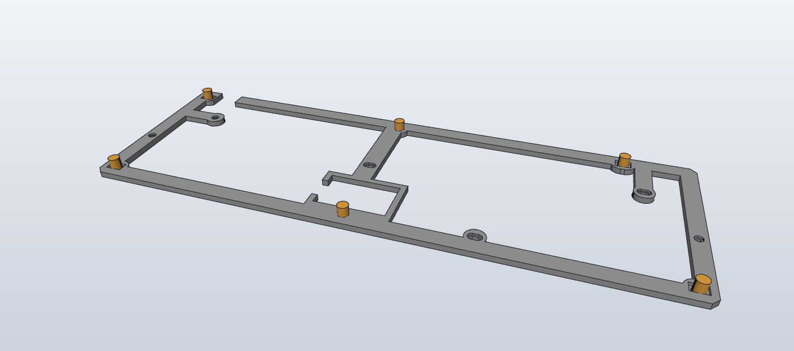
- 04
plate 얹고 위 나사 조이기
plate를 얹고 위 나사 6개를 조인다. 스위치와 배선 전이어도 된다. 장공 쪽 스탠드오프 4개가 plate 구멍 위치로 따라간다.
확인plate가 휘지 않고 6곳 모두 스탠드오프 위에 앉는다.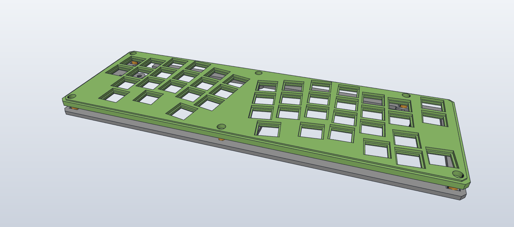
- 05
뒤집어서 아래 나사 조이기
프레임째 뒤집어 아래 나사 6개를 조인다. 버튼헤드 Ø5.7이 장공 폭 3.3 위에 편측 1.2씩 걸친다. 불안하면 M3 와셔를 넣는다.
안 맞으면스탠드오프가 장공 끝에 닿아 더 못 가면 프레임 장공을 줄로 늘리거나 프레임만 다시 출력한다.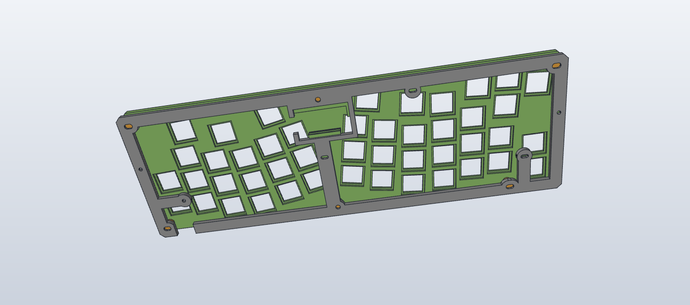
아래에서 본 모습. - 06
plate 떼고 프레임을 케이스에 고정
위 나사를 풀어 plate를 뗀다. 스탠드오프는 프레임에 남는다. 프레임을 하우징 지지대에 놓고 케이스 나사 6개를 조인다. H02·H03·H04는 X 장공, H01·H05·H06은 원형이다. 케이스 나사는 plate 아래에 있어서 이때만 손이 닿는다.
확인6개 모두 억지 없이 들어가고 프레임이 뜨거나 휘지 않는다.안 맞으면H05·H06이 안 맞으면 프레임 문제다. 열린 항목 1을 본다.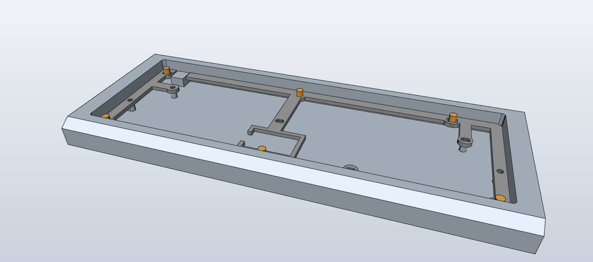
- 07
USB 연장 커넥터 고정
패널형 커넥터를 하우징 뒤쪽 USB 개구부 안쪽에 맞추고 글루스틱이나 핫글루로 붙인다. 프레임 뒤 테두리의 USB 노치(폭 14)가 커넥터 자리를 비워 둔다. 프레임을 고정한 다음에 붙이면 노치 위치에 맞추기 쉽다(이 페이지의 순서 제안).


plate 모듈
- 08
스위치 46개 끼우기
plate만 작업대에 두고 위에서 끼운다. 걸쇠가 14.0 홀 층(1.5) 아래 릴리프에 걸리고, 플랜지는 plate 윗면보다 2 아래(16.5 개구 안)에 앉는다.
안 맞으면빡빡하면 16.5 개구로 바늘줄을 넣어 14.0 홀을 다듬는다. 헐겁거나 걸쇠가 안 걸리면 아래 릴리프 쪽에서 접착한다. - 09
배선과 Pro Micro
- 4행 × 12열 매트릭스를 다이오드와 함께 배선한다. 펌웨어 JSON 기준 행 D1·D0·D4·C6, 열 D7·E6·B4·B5·F4·F5·F6·F7·B1·B3·B2·B6.
- Pro Micro는 부품면을 아래로 해 브래킷 홈에 −X(USB) 끝에서 밀어 넣는다. 배선은 PCB 윗면(plate 쪽, 빈 공간 4.4)에서 한다.
- 연장 케이블 플러그를 Pro Micro에 꽂는다.
확인프레임 테두리·바·컨트롤러 링과 겹치는 곳에서는 배선과 다이오드가 plate 밑면에서 5 아래(프레임 상면)까지 내려오지 않는다. 1차 실측에서는 8까지 내려왔다(열린 항목 4).안 맞으면홈이 빡빡하면 턱을 줄로, 헐거우면 테이프로 심을 댄다. - 10
plate 모듈 장착
plate, 스위치, 배선, Pro Micro를 한 덩어리로 프레임에 얹고 위 나사 6개를 조인다. 플러그는 프레임 링의 −X 벽 노치를 지나고, 남은 링 벽 조각이 PCB가 −X로 빠지는 것을 막는다. 케이블은 플러그에서 −X로 나와 프레임 창 위를 지나 뒤-왼쪽 USB 개구부로 간다.
확인plate가 하우징 벽 어디에도 닿지 않는다(설계 틈 0.8).안 맞으면닿는 곳만 plate 가장자리를 사포로 다듬는다. 편측 0.5까지는 커버 립이 단차에 1.0 이상 걸친다.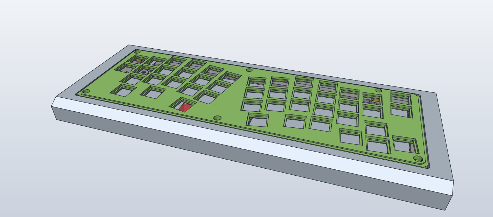

마감
- 11
- 12
키캡
맨 아랫줄은 왼쪽부터 1.25u · 1u · 2.25u · 2u · 1u · 1u, 나머지는 1u다. 스태빌라이저는 쓰지 않는다.

근거 · model/README.md · docs/assembly-revision.md 분해·점검 절차
정비할 때
- 01
USB 케이블을 뺀다
- 02
커버를 벗긴다
자석은 조각마다 한쪽 끝에 몰려 있다. 자석이 없는 쪽 끝을 들어 벗긴다. 키캡이 걸리면 그 키캡만 먼저 뽑는다.
- 03
위 나사 6개만 푼다
스탠드오프는 육각이 포켓 벽에 막혀 돌지 않으므로 아래 나사가 같이 풀리지 않는다.
- 04
plate 모듈을 꺼낸다
plate, 스위치, 배선, Pro Micro가 한 덩어리로 들린다. 조금 들어 올린 상태에서 연장 케이블 플러그를 Pro Micro에서 뽑는다.
- 05
프레임은 그대로 둔다
케이스 나사와 아래 나사는 프레임을 바꿀 때만 푼다. 프레임이나 plate를 바꾸면 조립 03–06(맞춰 놓고 조이기)을 다시 한다.
근거 · model/README.md §4 다음 단계로 넘어가는 조건 · measurements.csv · measurements/README.md
진행 단계와 실측
| 단계 | 필요한 실측·결과 | 만들 것 | 상태 |
|---|---|---|---|
| A 체결 시험 프레임 | M01 M02 M03 M07 M08 M09 M10 (+M18) | 2.5T 판 지그, 나사 6개가 억지 없이 들어가는지 | 1차 기록, 재실측 필요 |
| B 스위치 홀·체결 쿠폰 | M11 M19 M18 | 홀 13.7–14.3 × 3행, M2·M3, 카운터보어, 육각 포켓, 보스 탭 | 형상 개정, 내보내기 확인 대기 |
| C 코너 R 샘플 | M03 M06 M18 | 커버 코너 R2 / 2.5 / 3 / 3.5 | 실측 대기 |
| D 하부 프레임 | A 결과 + M05 M13 M14 M15 M16 | 프레임 | 대기 |
| E 스위치 plate | B 결과 + M12 M20 M21 | plate. 외곽 틈은 쿠폰 외곽 오차율로 | 대기 |
| F 커버 | C 결과 + M17 | 커버 3조각 | 대기 |
| G 전체 출력 | A–F 결과를 CAD에 반영한 뒤 | 업체용 STL/STEP | 대기 |
주황은 2026-11-04 1차 기록이다. 150 mm 캘리퍼로 한두 곳만 잰 대략값이라 확정으로 세지 않는다. H 지지대 값(M05 H01 높이, M08 위치, M10 외경)만 참고 근거로 쓴다.
근거 · model/README.md 결정 기록 · measurements.csv · samples/README.md
결정 기록
- 2026-11-05현재 설계는 split mount v3. 한때 폐기로 처리했다가 되살렸다(사용자: 폐기는 regression). plate 보호 변형은 원본 계열의 별도 파일로 보존하고, split 계열로 옮길 때의 출발점으로 쓴다.
- 2026-11-05plate 보호. 프레임 스탠드오프 X 장공, plate 외곽 틈 0.3 → 0.8, 맞춰 놓고 조이는 조립 순서.
- 2026-11-05B 쿠폰 개정. 행 C(plate 3층, 같은 출력 방향), 행 D(M2·M3·카운터보어·육각 포켓), 별도 보스 탭.
- 2026-11-05FDM 확정, JLC3DP. 키보드 제작 쿠폰을 쓰기 위해. SUS304 판금은 검토만 했다.
- 2026-11-041차 실측은 참고로만. 150 mm 캘리퍼 대략값이라 모델 값은 그대로 두고, H 지지대 값(M08 위치, H01 높이 5.5, 외경 5)만 근거로 쓴다.
- 2026-11-04마운트가 조립 오차를 흡수해야 한다. r2 외곽은 코너 R 외에는 잘 맞으므로 외곽을 과하게 줄이지 않고 체결부 장공과 조립 순서로 맞춘다.
- 2026-11-04커버 고정은 자석. 보스가 카운터보어에 꽂혀 위치를 잡고, 자석이 강철 나사머리를 당긴다.
- 2026-11-04커버·plate는 아크릴 r2 형상. 커버 3조각 창, plate + upper plate를 3층 한 부품으로.
- 2026-11-04Pro Micro는 중앙 하단, plate 아랫면 브래킷. plate 나사를 풀면 컨트롤러까지 한 덩어리로 빠진다.
- 2026-11-04스태빌라이저 없음. 2.25u·2u 썸키는 스위치만으로 지지.
- 2026-11-04USB는 패널형 연장 케이블. PSD60 개구부 안쪽에 접착(M15·M16).
- 2026-11-04스위치 Gateron KS-3 Milky Yellow Pro. 아크릴 홀 실측(M11)은 생략하고 r2 도면 14.0에서 시작.
- 버린 안볼트 구멍 주변 교환식 블럭. 자리가 없고 끼움이 하나 늘며 재주문 대기는 같다.
- 버린 안벽 있는 커버. 뒤쪽 윗줄 키캡과 내벽 사이가 2.15라 틈 0.3 + 벽 2가 안 들어간다.
- 버린 안자석 ↔ 자석. plate 상면에 포켓 자리가 부족하고 위치결정이 따로 필요하다.
- 버린 안별도 Ø2.5 핀. 좌·우 세로 베젤 폭 5에 들어가지 않는다.
- 버린 안r2식 관통 나사. 커버 위로 나사머리 6개가 보인다.
- 버린 안키 블록 실루엣 커버 창. r2 조각 경계를 그대로 쓰는 쪽으로 바꿨다.